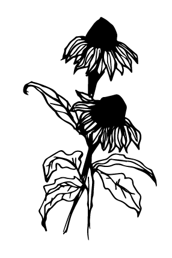

L’insecte est attiré par la couleur des fleurs, les divers motifs qui sont sur les pétales, la forme et
la taille des pétales ainsi que l’odeur dégagée par les fleurs. Il faut tout de même noter que chaque insecte a sa propre préférence en matière de couleurs de fleurs. Les papillons qui vivent le jour, par exemple, aiment les fleurs bleues,
violettes ou roses, ceux qui volent pendant la nuit adorent les fleurs blanches et les diptères ou les fleurs jaunes. Les insectes prêtent également attention à la forme des fleurs. Tous les insectes ne peuvent pas s’alimenter sur toutes
les
sortes de fleurs. Pour le cas des papillons avec une longue trompe, ils absorbent le nectar au fond de long tube sur certaines fleurs, mais les insectes détenant des pièces buccales plus courtes n’ont pas les mêmes facultés.
